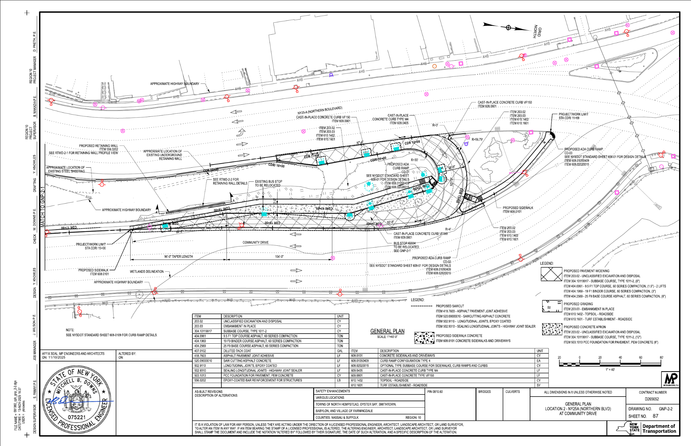

AI to review errors in bridge plan drawings.
A narrow AI workflow that reads a dense bridge contract plan set and shortlists likely pay-item errors — each with the evidence behind the flag.
Try the live demo ↗One of my best friends, Carol, is a civil engineer. She spends most of her full-time job reviewing contract plans for errors.
Even with multiple humans reviewing these contract plans, errors still went unnoticed, which could cost hundreds of thousands and create delays once projects went into construction.
When she first showed me the plans, they looked dense and almost unreadable to an outsider. I was skeptical if AI could read through these plans when, even after a few calls, I struggled to.

This wasn't a use case for a generic AI wrapper. It had to start with workflow judgment.
We narrowed the problem to one concrete error type: missing pay item numbers tied to concrete bridge elements. That gave the product a real surface area for testing. Instead of trying to automate an entire engineer’s review process, we focused on one narrow but valuable check.
We created mock datasets, used PyMuPDF to extract the plan set’s text layer and the on-page position of each element, mapped relevant and irrelevant pay-item numbers, and built regression tests around the review logic.
Notes
I'm always curious to understand what the cost of no action is when evaluating a problem to solve. I liked how this problem didn't just tie to time saved, but also massive cost implications if errors weren't found during the design process.
I also find when building a solution, it's imperative to deeply understand the workflow you're looking to automate or improve. Carol spent over a week creating mock data sets and teaching me how to find errors first. Through this process, we got to go into the details of where she starts when looking at a plan set, how she makes sense of a plan, and what context is necessary to identify an error.